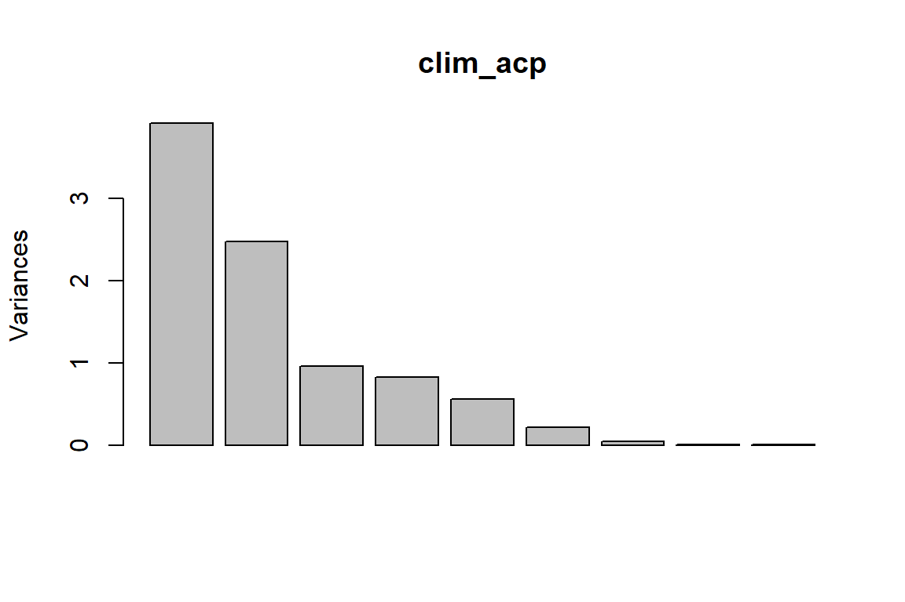
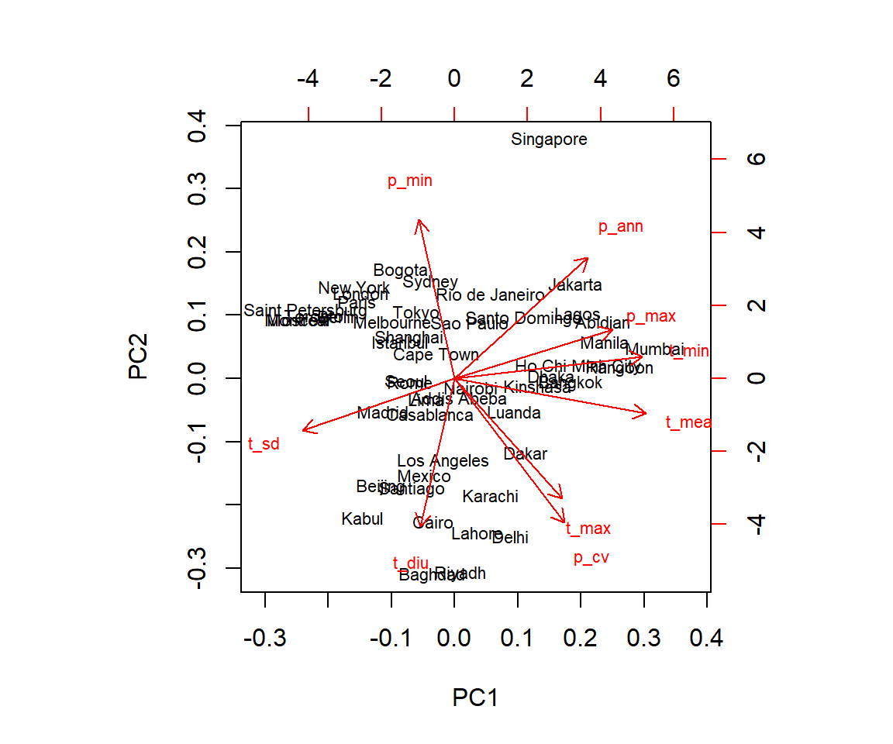
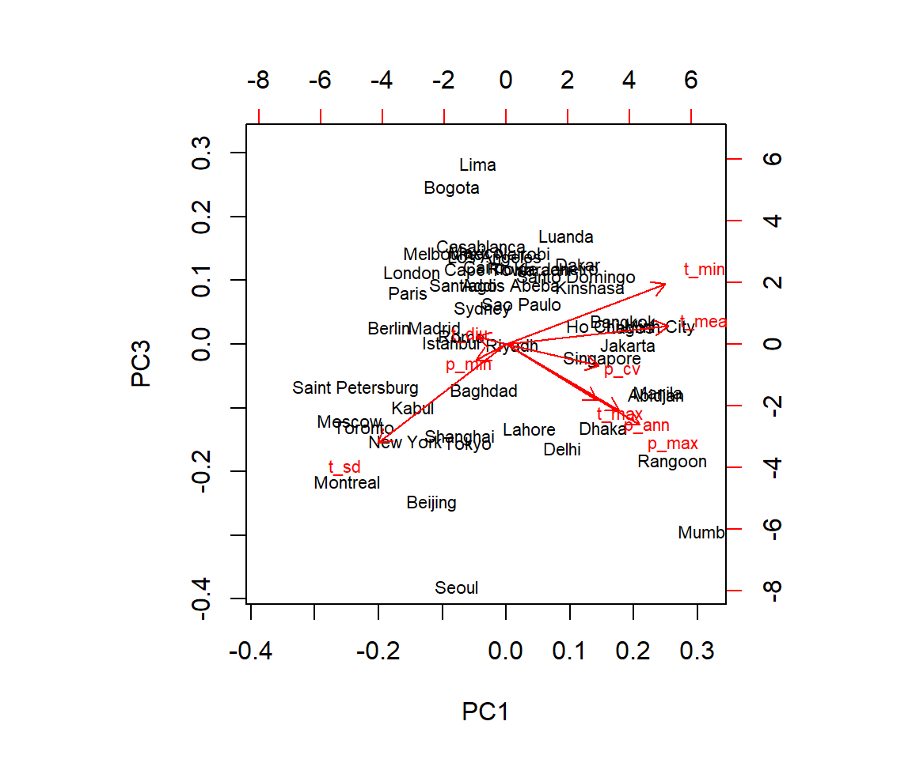
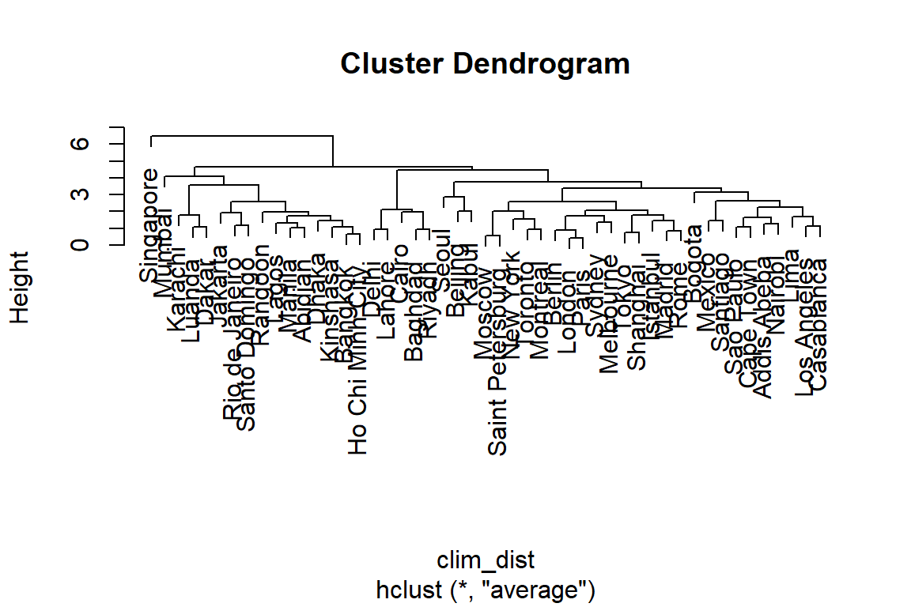
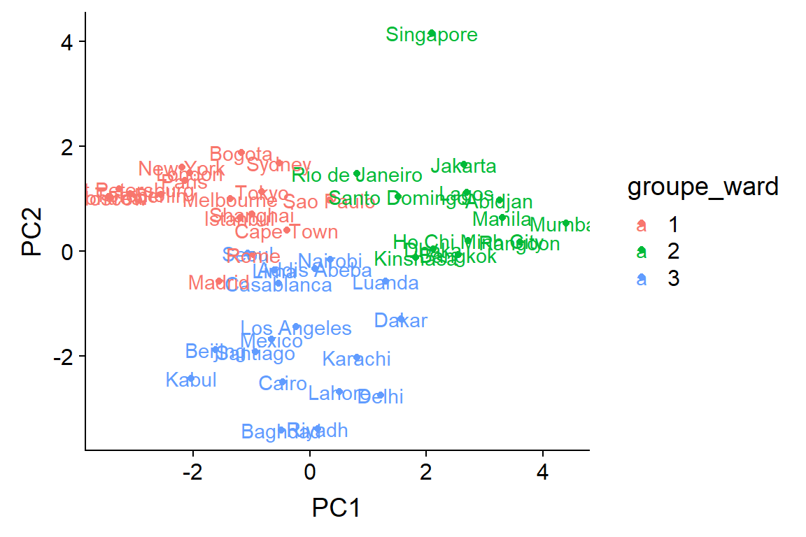
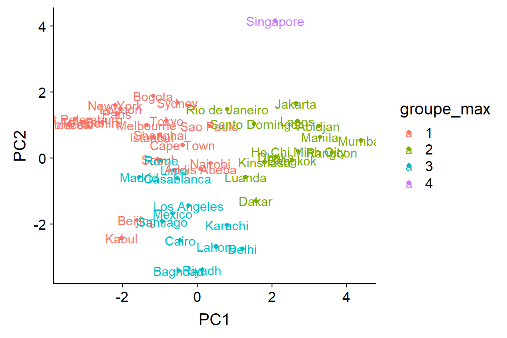

Analyses multivariées, Partie 1
3 décembre 2018
Objectifs
Décrire différents rôles des techniques d’analyse multivariées.
Décrire l’utilité des méthodes d’ordination et de regroupement pour réduire la dimensionalité d’un jeu de données.
Exécuter une analyse en composantes principales et pouvoir interpréter les résultats.
Diviser les observations en classes à partir des méthodes de regroupement hiérarchique.
Pourquoi les analyses multivariées?
Les analyses multivariées servent à modéliser la distribution conjointe de plusieurs variables (distribution des variables individuelles et corrélations). Par exemple:
expliquer une réponse multivariée;
expliquer une réponse univariée en fonction d’un grand nombre de prédicteurs partiellement corrélés;
visualiser les différences entre observations en fonction de plusieurs variables.
Structure des données multivariées
- Matrice \(X\) représentant \(n\) observations de \(p\) variables.
\[ \begin{bmatrix} x_{11} & x_{12} & ... & x_{1p} \\ x_{21} & x_{22} & ... & x_{2p} \\ ... & ... & ... & ... \\ x_{n1} & ... & ... & x_{np} \end{bmatrix} \]
Exemple
- Données climatiques pour 49 grandes villes (source: WorldClim).
villes <- read.csv("../donnees/cities_climate.csv")
head(villes)## city long lat t_mean t_diu t_sd t_max t_min p_ann p_max p_min
## 1 Tokyo 139.751 35.685 15.6 7.9 7.492 30.7 0.7 1428 185 47
## 2 Shanghai 121.400 31.046 16.2 7.4 8.339 31.6 0.8 1050 167 41
## 3 Mumbai 72.826 18.975 26.8 7.3 1.767 32.7 18.9 2370 827 0
## 4 Karachi 67.082 24.906 25.9 9.9 4.035 34.2 12.0 194 82 0
## 5 Delhi 77.217 28.667 25.1 13.1 6.715 40.5 7.3 734 274 3
## 6 Manila 120.982 14.604 27.3 8.0 1.078 33.8 21.4 2150 466 8
## p_cv
## 1 40
## 2 46
## 3 143
## 4 134
## 5 142
## 6 90Normalisation des données
Les méthodes d’ordination et de regroupement sont basées sur le concept de distance entre les points dans l’espace à \(p\) dimensions.
On ne peut pas comparer cette distance selon plusieurs variables avec des unités différentes.
C’est pourquoi on commence par normaliser les variables: soustraire de chaque colonne sa moyenne et diviser par son écart-type (fonction
scaledans R). Le résultat est une matrice où chaque colonne a une moyenne de 0 et un écart-type de 1.
Normalisation des données
climat <- villes[, 4:12]
rownames(climat) <- villes$city
clim_norm <- scale(climat)
round(head(clim_norm), 2) # Afficher seulement 2 décimales## t_mean t_diu t_sd t_max t_min p_ann p_max p_min p_cv
## Tokyo -0.44 -0.77 0.91 0.07 -0.62 0.66 -0.06 0.78 -0.74
## Shanghai -0.36 -0.96 1.17 0.24 -0.61 0.08 -0.17 0.58 -0.59
## Mumbai 1.17 -1.00 -0.86 0.46 1.14 2.12 3.86 -0.81 1.84
## Karachi 1.04 0.01 -0.16 0.74 0.47 -1.24 -0.69 -0.81 1.62
## Delhi 0.93 1.24 0.67 1.95 0.02 -0.41 0.48 -0.71 1.82
## Manila 1.25 -0.73 -1.07 0.67 1.39 1.78 1.66 -0.54 0.52Réduction de la dimensionnalité
Comme on ne peut pas visualiser un nuage de points en 9 dimensions, il serait utile de réduire la dimensionnalité des données tout en conservant le maximum d’information sur la variation entre les villes.
Les méthodes d’ordination effectuent une transformation des \(p\) variables originales en un nombre plus restreint de nouvelles variables, en reproduisant le plus fidèlement possible les distances entre les points dans l’espace original en \(p\) dimensions. Ex.: analyse en composantes principales.
Les méthodes de regroupement (clustering) divisent les observations en un nombre discret de groupes (ou catégories) en fonction de leur proximité dans l’espace à \(p\) dimensions. Ex.: classification hiérarchique ascendante.
Analyse en composantes principales (ACP)
Introduction
- Nuage de points de 3 variables climatiques pour les 49 villes:
Introduction
- Considérons le cas extrême où une des trois variables est parfaitement prédite par les deux autres (collinéarité parfaite), par exemple \(z = 2x - 5y\).
Fonctionnement de l’ACP
L’ACP est une transformation de la matrice \(X\) (\(n\) observations \(\times ~ p\) variables, préalablement normalisées) choisie pour que:
- le premier axe dans la direction de variation maximale des données;
- le deuxième axe dans la direction de variation maximale qui est orthogonale (perpendiculaire) au premier;
- le troisième axe dans la direction de variation maximale qui est orthogonale aux deux premiers; et ainsi de suite.
Ces axes (composantes principales) sont donc orthogonaux (non-corrélés) et classés en ordre décroissant de variance expliquée.
Fonctionnement de l’ACP
Mathématiquement, l’ACP requiert le calcul des valeurs propres et vecteurs propres de la matrice des covariances entre paires de variables dans \(X\). Les vecteurs propres indiquent la direction des composantes principales et les valeurs propres indiquent la variance des données sur chaque axe.
L’ACP est basée sur la théorie des distributions normales multivariées, donc fonctionne mieux lorsque les variables s’approchent de la normalité.
Nous verrons au prochain cours des méthodes d’ordination adaptées aux données de présence-absence et d’abondance communes en écologie.
ACP avec R
clim_acp <- prcomp(clim_norm)
summary(clim_acp)## Importance of components:
## PC1 PC2 PC3 PC4 PC5 PC6
## Standard deviation 1.9785 1.5741 0.9774 0.90767 0.75003 0.46655
## Proportion of Variance 0.4349 0.2753 0.1061 0.09154 0.06251 0.02418
## Cumulative Proportion 0.4349 0.7102 0.8164 0.90792 0.97042 0.99461
## PC7 PC8 PC9
## Standard deviation 0.20003 0.08141 0.04355
## Proportion of Variance 0.00445 0.00074 0.00021
## Cumulative Proportion 0.99905 0.99979 1.00000- Le sommaire du résultat de l’ACP indique
- l’écart-type de chacune des 9 composantes principales;
- le rapport entre la variance d’une composante et la variance totale; et
- la proportion cumulative de la variance en fonction du nombre de composantes.
ACP avec R
Diagramme à barres des variances: screeplot.
screeplot(clim_acp)
ACP avec R
- Élément
rotation: transformation entre les variables originales (normalisées) et les composantes principales.
round(clim_acp$rotation, 2)## PC1 PC2 PC3 PC4 PC5 PC6 PC7 PC8 PC9
## t_mean 0.47 -0.11 0.11 -0.27 0.19 -0.01 0.08 0.80 0.03
## t_diu -0.09 -0.46 0.05 -0.35 -0.78 0.06 -0.06 0.07 -0.19
## t_sd -0.38 -0.16 -0.58 -0.08 0.30 0.00 -0.01 0.20 -0.60
## t_max 0.27 -0.37 -0.33 -0.51 0.30 0.21 -0.06 -0.41 0.34
## t_min 0.46 0.07 0.36 -0.12 0.13 0.03 -0.18 -0.34 -0.69
## p_ann 0.33 0.37 -0.39 -0.01 -0.29 0.24 0.66 -0.08 -0.11
## p_max 0.39 0.15 -0.48 0.30 -0.25 0.00 -0.66 0.08 0.06
## p_min -0.09 0.49 -0.09 -0.57 -0.08 -0.63 -0.10 -0.04 0.04
## p_cv 0.27 -0.45 -0.13 0.33 0.00 -0.71 0.29 -0.14 -0.02- Par exemple, pour la première composante principale: PC1 = 0.47 t_mean - 0.09 t_diu - 0.38 t_sd + 0.27 t_max + 0.46 t_min + 0.33 p_ann + 0.39 p_max - 0.09 p_min + 0.27 p_cv.
ACP avec R
- Élément
x: coordonnées de chaque observation sur les axes des composantes principales.
round(head(clim_acp$x), 2)## PC1 PC2 PC3 PC4 PC5 PC6 PC7 PC8 PC9
## Tokyo -0.83 1.14 -1.07 -0.37 0.48 0.15 0.29 -0.03 0.01
## Shanghai -1.00 0.71 -1.00 -0.30 0.99 0.05 0.04 0.03 -0.01
## Mumbai 4.39 0.53 -2.00 1.97 -0.49 -0.24 -0.58 0.04 0.00
## Karachi 0.80 -2.03 0.81 0.09 1.04 -0.78 0.14 0.20 0.08
## Delhi 1.22 -2.75 -1.11 -0.58 0.05 -0.48 -0.12 0.01 0.06
## Manila 3.30 0.64 -0.51 0.48 -0.02 0.52 0.17 -0.08 -0.06Visualisation de l’ACP
- Diagramme de double projection (biplot)
biplot(clim_acp)
Visualisation de l’ACP
- Inspecter autres composantes avec l’argument
choices.
biplot(clim_acp, choices = c(1, 3))
ACP et régression
L’ACP peut transformer un grand nombre de prédicteurs corrélés en un plus petit nombre de variables non-corrélées.
Principal inconvénient: les effets sont plus difficiles à interpéter.
Tout de même utile dans les cas où on s’intéresse d’abord à prédire la réponse et que l’effet d’un prédicteur individuel est moins important.
- Exemple: Prédire la composition de végétation à partir d’images de télédétection hyperspectrale (réflectance pour des centaines de longueurs d’onde).
Combien de composantes principales choisir?
- Variances associées aux composantes principales; leur moyenne est 1 pour des données normalisées.
clim_acp$sdev^2## [1] 3.914417064 2.477765395 0.955214474 0.823859308 0.562545790 0.217664459
## [7] 0.040010038 0.006626862 0.001896610- Critère simple: conserver les composantes avec une variance supérieure à 1.
- D’autres critères basés sur des tests statistiques formels, voir Peres-Neto et al. (2005) pour une comparaison.
- Dans une analyse exploratoire, le choix du nombre de composantes n’est pas critique. Pour une ACP suivie d’une régression, on peut procéder par sélection de modèles.
Classification hiérarchique ascendante
Classification hiérarchique ascendante
La classification hiérarchique ascendante vise à créer des groupes d’observations semblables selon une série de variables.
Le nom vient du fait qu’on commence avec les observations individuelles, qui sont regroupées progressivement jusqu’à ce qu’on obtienne un seul groupe.
La structure résultante est un arbre ou dendrogramme montrant les relations de proximité pour l’ensemble des observations.
Matrice de distance
- L’algorithme de classification hiérarchique requiert une matrice de la distance \(d_{ij}\) pour chaque paire d’observations \(i\) et \(j\).
\[ \begin{bmatrix} 0 \\ d_{21} & 0 \\ d_{31} & d_{32} & 0 \\ ... \\ d_{n1} & d_{n2} & ... & d_{n(n-1)} & 0 \end{bmatrix} \]
La fonction
distdans R calcule la matrice de distance entre les rangées d’une matrice.Comme pour l’ACP, les différentes variables doivent être normalisées au préalable.
Matrice de distance
- Pour des variables numériques, la distance la plus couramment utilisée est la distance euclidienne:
\[ d_{ij} = \sqrt{\sum_{k = 1}^p (x_{ik} - x_{jk})^2} \]
- En deux dimensions, cela correspond à la distance en ligne droite calculée par le théorème de Pythagore:
\[ d_{ij} = \sqrt{(x_i - x_j)^2 + (y_i - y_j)^2} \]
Algorithme de classification hiérarchique ascendante
- Supposons qu’on ait la matrice de distance suivante entre 4 observations.
\[ \begin{array} && A & B & C \\ B & 11 \\ C & 13 & 6 \\ D & 7 & 11 & 9 \end{array} \]
L’algorithme regroupe d’abord les deux observations les plus rapprochées, soit B et C (distance de 6).
Ensuite, il remplace B et C par une observation BC et calcule la distance entre ce groupe et chacune des autres observations existantes.
Algorithme de classification hiérarchique ascendante
- Différents critères possibles pour la distance entre un groupe et une observation.
- Utilisons une règle ou la distance à partir d’un groupe est la moyenne des distances des éléments de ce groupe.
\[ \begin{array} && A & B & C \\ B & 11 \\ C & 13 & 6 \\ D & 7 & 11 & 9 \end{array} \]
Algorithme de classification hiérarchique ascendante
- Différents critères possibles pour la distance entre un groupe et une observation.
- Utilisons une règle ou la distance à partir d’un groupe est la moyenne des distances des éléments de ce groupe.
\[ \begin{array} & & A & BC \\ BC & 12 & \\ D & 7 & 10 \end{array} \]
Algorithme de classification hiérarchique ascendante
- Le nouveau groupe (BC) est traité comme une observation et on répète le processus jusqu’à ce qu’il n’y ait que deux groupes, joints à la dernière étape.
\[ \begin{array} & & A & BC \\ BC & 12 & \\ D & 7 & 10 \end{array} \]
Algorithme de classification hiérarchique ascendante
- Le nouveau groupe (BC) est traité comme une observation et on répète le processus jusqu’à ce qu’il n’y ait que deux groupes, joints à la dernière étape.
\[ \begin{array} & &AD \\ BC & 11 \end{array} \]
Classification hiérarchique avec R
- Fonction
hclustappliquée à la matrice de distance.
clim_dist <- dist(clim_norm)
clim_ch <- hclust(clim_dist, method = "average")
plot(clim_ch)
Critères de regroupement
L’argument method indique comment calculer la distance entre groupes A et B:
saut minimum (
method = "single"): distance minimale entre une observation dans A et une observation dans B.saut maximum (
method = "complete"): distance maximale entre une observation dans A et une observation dans B.lien moyen (
method = "average"): moyenne des distances sur l’ensemble des paires d’observations dont une est dans A et une dans B.la critère de Ward (
method = "ward.D2"): regroupement qui minimise l’augmentation de la variance totale intra-groupe.
Saut minimum
clim_ch_min <- hclust(clim_dist, method = "single")
plot(clim_ch_min)
Saut maximum
clim_ch_max <- hclust(clim_dist, method = "complete")
plot(clim_ch_max)
Critère de Ward
clim_ch_ward <- hclust(clim_dist, method = "ward.D2")
plot(clim_ch_ward)
Extraire des groupes d’une classification hiérarchique
- La fonction
cutreepermet de “couper” le dendrogramme à une certaine hauteur (argument h) ou pour obtenir un certain nombre de groupes (argument k).
- La fonction renvoie un vecteur des indices de groupes.
- Exemple: Trois grands groupes du dendrogramme produit par la méthode de Ward:
groupes <- cutree(clim_ch_ward, k = 3)
head(groupes)## Tokyo Shanghai Mumbai Karachi Delhi Manila
## 1 1 2 3 3 2Comparer les groupes à l’ordination
ord_groupes <- data.frame(clim_acp$x[, 1:2], groupe_ward = as.factor(groupes))
head(ord_groupes)## PC1 PC2 groupe_ward
## Tokyo -0.8292567 1.1390831 1
## Shanghai -0.9964678 0.7094018 1
## Mumbai 4.3904533 0.5328498 2
## Karachi 0.8027417 -2.0305728 3
## Delhi 1.2169313 -2.7525580 3
## Manila 3.2953893 0.6395510 2Groupes selon la méthode de Ward
ggplot(ord_groupes, aes(x = PC1, y = PC2, color = groupe_ward)) +
geom_point() +
geom_text(aes(label = rownames(ord_groupes)))
Groupes selon le saut maximum
ord_groupes$groupe_max <- as.factor(cutree(clim_ch_max, k = 4))
ggplot(ord_groupes, aes(x = PC1, y = PC2, color = groupe_max)) +
geom_point() +
geom_text(aes(label = rownames(ord_groupes)))
Résumé
Les analyses multivariées servent à décrire et expliquer la distribution conjointe de plusieurs variables.
Lorsque les variables représentent différentes unités, il est important de les normaliser afin d’obtenir des échelles comparables.
L’ordination vise à produire dans un nombre de dimensions réduit (souvent 2) la représentation la plus fidèle possible de la variation entre les observations multivariées.
Résumé
L’analyse en composantes principales (ACP) est une méthode d’ordination qui effectue une transformation linéaire (rotation) des variables originales, afin d’obtenir des composantes principales qui sont non-corrélées et classées en ordre décroissant de variance.
Les coordonnées des observations et les variables originales peut être représentées simultanément dans l’espace des composantes principales (diagramme de double projection).
Résumé
Les méthodes de regroupement visent à classer les observations multivariées dans un petit nombre de groupes d’observations les plus similaires possibles.
La classification hiérarchique ascendante effectue un regroupement graduel à partir des observations individuelles et en fonction de différentes règles qui définissent la distance entre groupes. Cette classification produit un dendrogramme.
Références
Manly, B.F. et Alberto, J.A.N. (2016) Multivariate statistical methods: a primer. Chapman and Hall/CRC.
Legendre, P. et Legendre, L. (2012) Numerical Ecology, 3e éd. Elsevier.
Borcard, D., Gillet, F. et Legendre, P. (2018) Numerical Ecology with R, 2e éd. Springer.